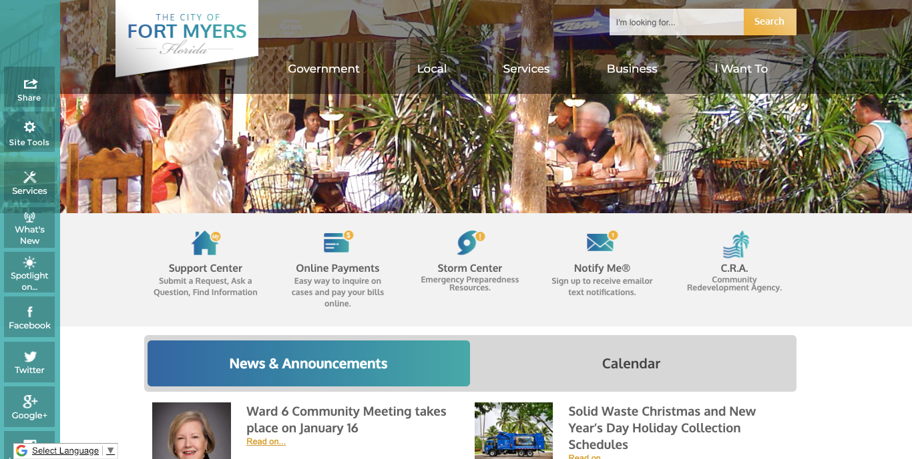
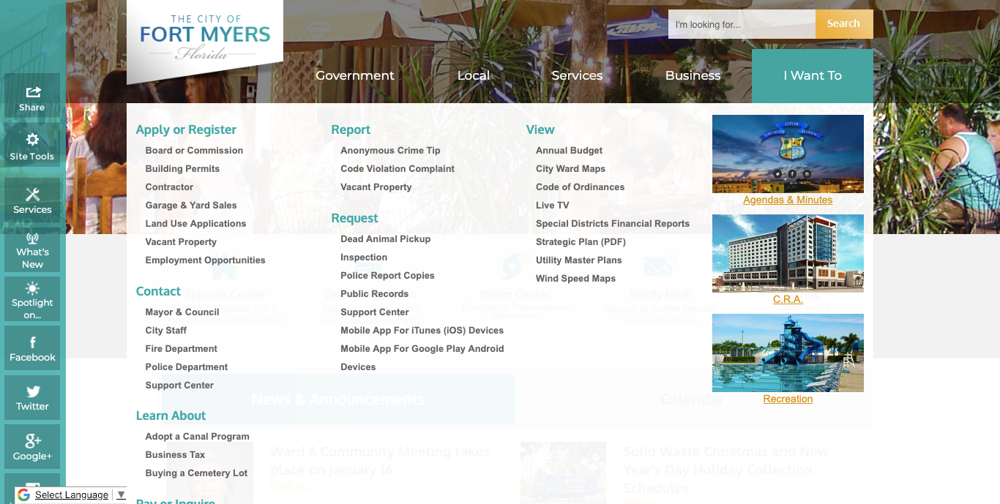
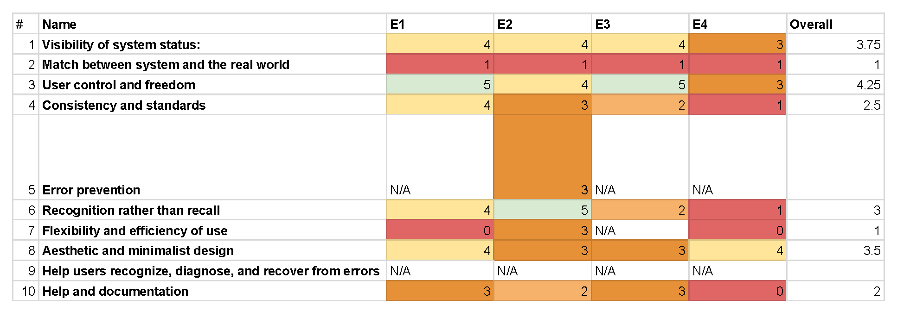
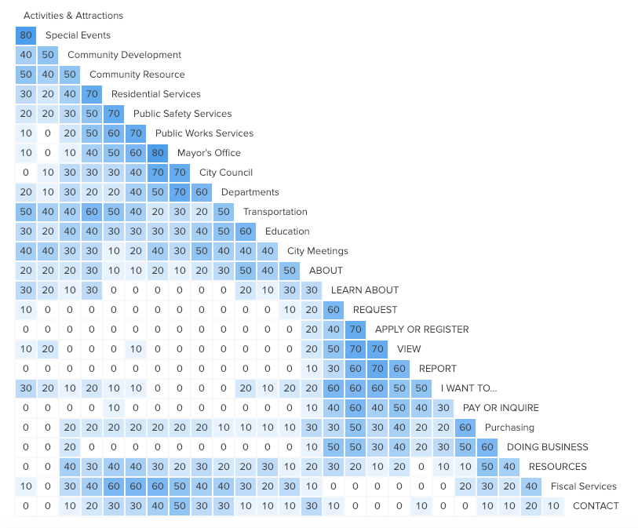
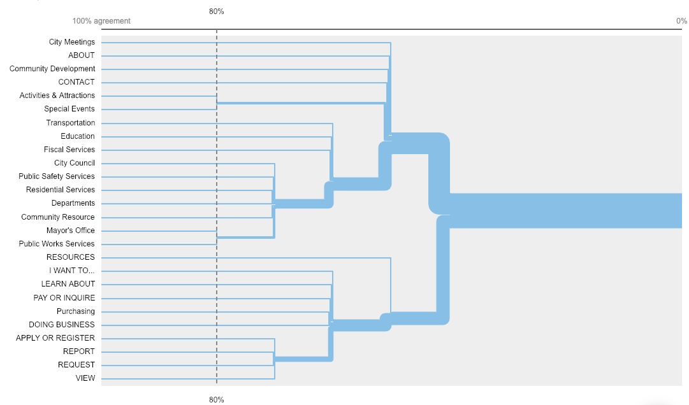

01 OVERVIEW
The City of Fort Myers is in the process of refreshing their website. For the general look and feel, our client has partnered up with CivicPlus, who is specialized in designing government websites. The City of Fort Myers asked for our help on evaluating the prototypes provided by CivicPlus.
For a semester-long project, we offered a scope on evaluating the information architecture of the website (specifically the navigation bar). In addition to that, based on the evaluations and user testings results, we proposed recommendations to our clients that can help them to improve the navigation experience.
Below are two images showing what navigation bar currently looks like.

Multiple bars with navigation purposes

Three levels within the navigation bar
02 METHODOLOGIES
HEURISTIC EVALUATION
of the proposed CivicPlus design

OPEN CARD SORTING
for the second-level navigation bar
Our team used Optimal Workshop as a tool for distributing online card sorting testing and for analysis. We decided to focus on the second level of the navigation bar (the bold blue level). We have invited 10 participants, selected based on the percentage distribution of Fort Myer's age demographics. We have 4 participants age 18 to 24, 4 participant age 25 to 44, and two participants age 45 to 64. Below are the card sorting results generated by Optimal Workshop.
Top: Similarity Matrix (click here for more information on how to read the graph, provided by Optimal Workshop)
Bottom: Dendrograms (click here for more information on how to read the graph, provided by Optimal Workshop)


TASK SCENARIO EVALUATIONS
for top searched and visited information
Based on the click and search rates from Google Analytics of the current running site. Six tasks are selected for scenario evaluations:
- Use the navigation bar to look for jobs
- Use the navigation bar to pay a parking ticket (multiple routes can link to the page, curious to see which route is chosen from the users)
- Use the navigation bar to pay utility bills
- Find information on the golf course
- Find information on the ice rink
- Find information on obtaining a building permit